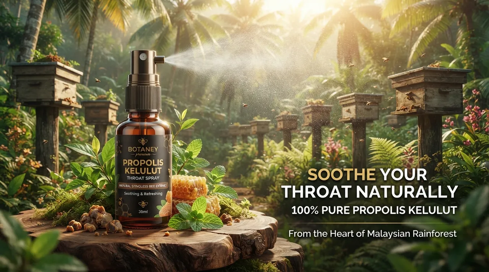
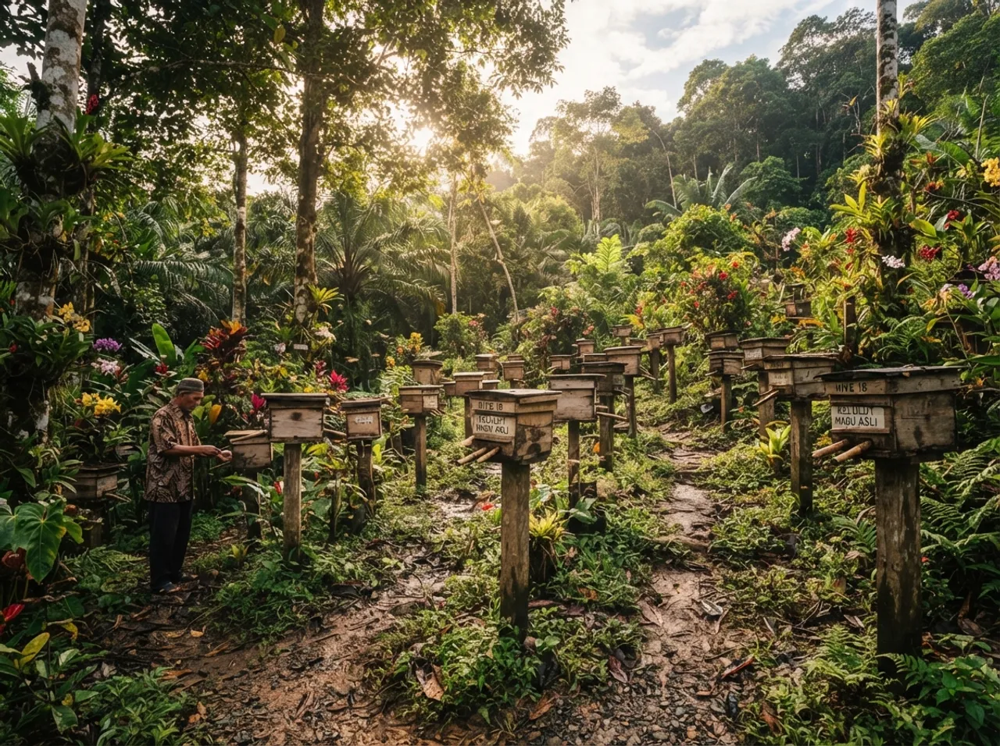
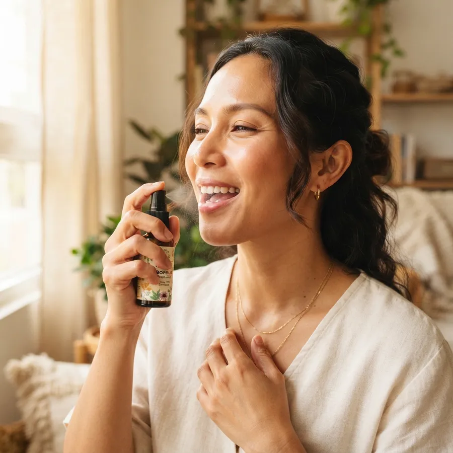
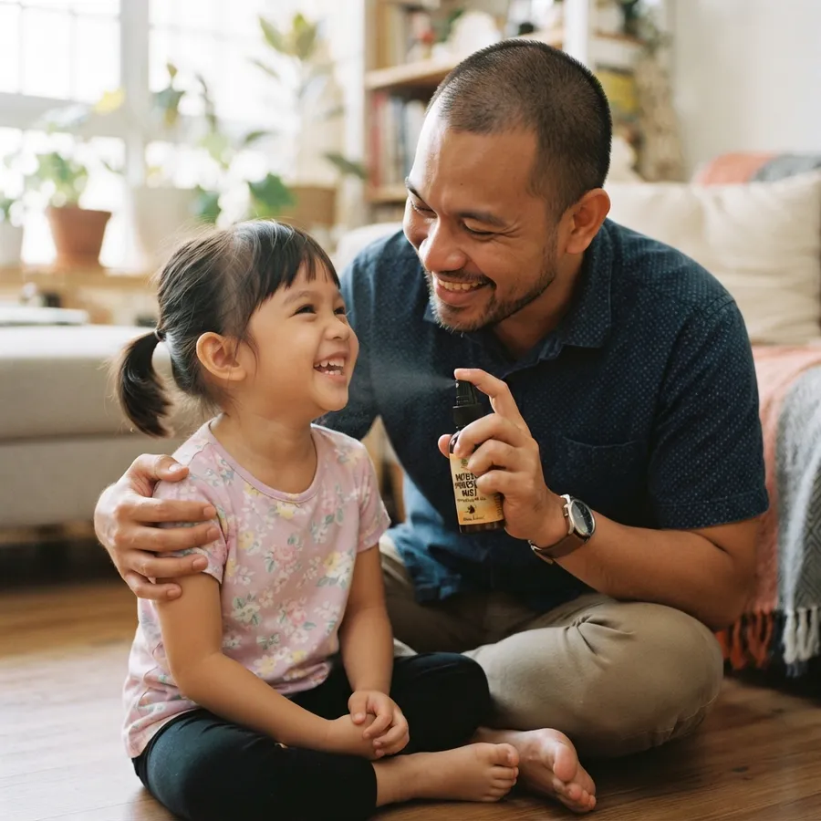
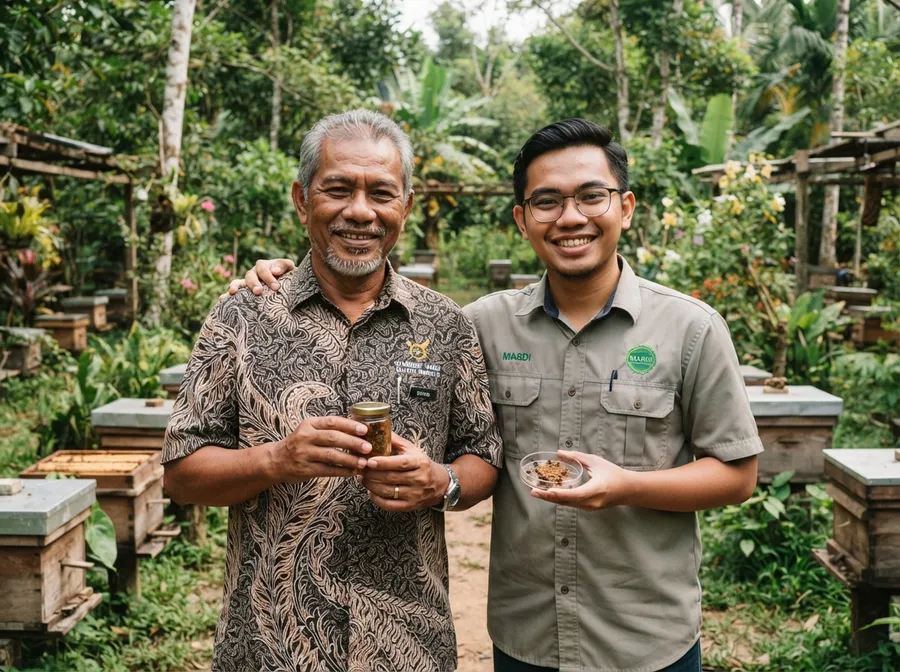
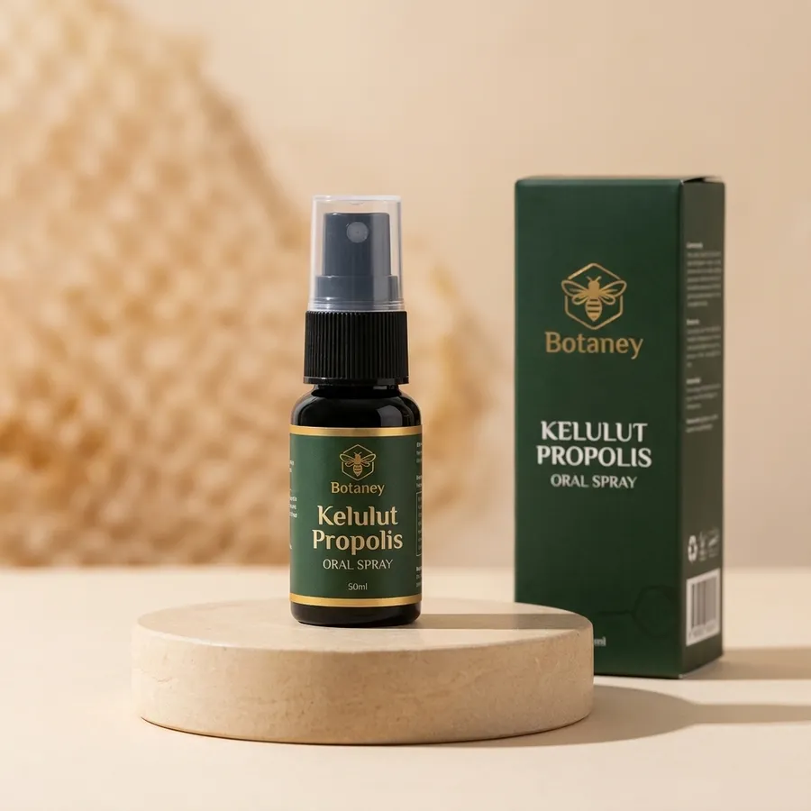
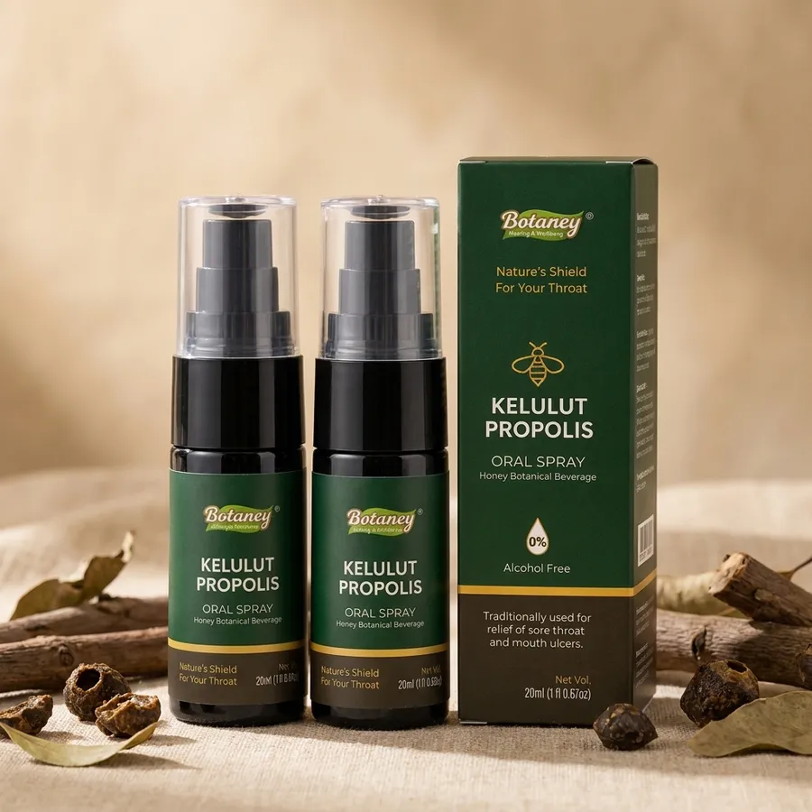

Tekak gatal waktu pagi
Aircond office, habuk jalan, cuaca tak menentu. Telan air liur pun rasa tak selesa.
100% dari hutan hujan tropika Malaysia
Kelulut Bee Propolis Spray 5ml — propolis kelulut asli Malaysia dalam format semburan. Tak perlu sukat titis, tak perlu bancuh. Sembur terus ke tekak, tutup, masuk poket.
RM35 sebotol (5ml)

Format poket — senang konsisten setiap hari
Aircond office, habuk jalan, cuaca tak menentu. Telan air liur pun rasa tak selesa.
Ada meeting, ada kelas anak, ada kenduri. Tak nak sampai kena cuti.
Seorang kena, seminggu kemudian adik pula kena. Satu rumah berjaga.
Botol besar, kena bancuh, kena sukat. Seminggu rajin, lepas tu tersadai.
Masalahnya bukan anda tak jaga kesihatan. Masalahnya kebanyakan produk susah nak konsisten — dan yang senang pula mahal atau meragukan sumbernya.

Propolis ialah resin semula jadi yang dikutip lebah kelulut dari pucuk pokok, daun dan bunga. Lebah guna propolis untuk tampal lubang sarang dan pastikan sarang bersih dari bakteria, virus dan kulat.
Sarang kelulut gelap dan lembap — secara logik tempat terbaik untuk kuman membiak. Tapi koloni kekal sihat. Rahsianya: propolis.
Tampal setiap lubang, halang kuman masuk.
Disinfektan semula jadi kelulut.
Sifat anti-bakteria, anti-radang & anti-oksidan.
Madu beri tenaga. Propolis beri pertahanan. Spray ini jadikan pertahanan itu semudah satu semburan.
Situasi sebenar — bandingkan sendiri.
| Situasi | Titis (drop) | Spray ini |
|---|---|---|
| Kena pada tekak | Kena sukat, bancuh, telan | Sembur terus ke tekak |
| Di office / dalam kereta | Leceh buka-botol-titis | 2 saat, tutup, simpan |
| Travel / bercuti | Risiko tumpah | Masuk poket / handbag |
| Konsisten harian | Ramai give up minggu ke-2 | Senang = konsisten |
Ayat jujur kami: rasa propolis asli memang pahit. Itu tanda ia pekat dan murni, bukan perisa. Format spray kurangkan rasa pahit sebab terus ke tekak — kalau anda memang tak tahan pahit langsung, ambil versi softgel (kapsul).
Setiap satu berserta rujukan jurnal — bukan claim kosong.
Bantu sokong aktiviti sel imuniti badan.
Rujukan: PMC 2025
Dikaji terhadap bakteria seperti S. aureus & E. coli.
Rujukan: Journal of Ethnopharmacology 2024
Bantu melegakan keradangan.
Rujukan: Springer 2025
Bantu neutralkan radikal bebas.
Rujukan: MDPI Antioxidants 2024
Dikaji untuk bantu luka sembuh lebih baik.
Rujukan: Wound Medicine 2025
Format spray kena terus pada tekak.
Rujukan: Journal of Biomedical Science 2025
Dikaji untuk plak & gusi.
Rujukan: BMC Oral Health 2024
Produk semula jadi untuk sokongan kesihatan harian. Bukan ubat, bukan untuk diagnos, merawat atau mencegah penyakit. Kesan berbeza ikut individu.
Satu dua kali cukup.
Hala muncung terus ke arah tekak.
Jangan makan/minum — bagi serapan penuh.


| Siapa | Cadangan |
|---|---|
| Dewasa | 2–4 semburan, 2x sehari (pagi & malam). Naikkan sedikit bila tekak mula gatal. |
| Kanak-kanak 6–12 | 1–2 semburan. Pantau dulu, mula rendah. |
| Kanak-kanak 2–6 | Dapatkan panduan admin atau rujuk doktor. Jangan bagi tanpa panduan. |
| Bawah 2 tahun | Rujuk doktor dulu. Wajib. |

“Setiap botol propolis yang keluar dari Botaney adalah dari ladang affiliate kami. Saya boleh jamin kualitinya.”
— Hj Zulkifli Zambri, Pengasas Botaney Hub Sdn Bhd
Fokus spray — tiga pilihan, ikut keperluan.

1 botol (5ml) — sesuai first-timer.
RM35
ORDER 1 BOTOL
2 botol (5ml × 2) — satu di rumah, satu di handbag.
RM68
ORDER 2 BOTOL5 botol, bayar 4 — stok 1–2 bulan sekeluarga.
RM135 Jimat RM40
ORDER 4 FREE 1Harga belum termasuk postage (dikira di checkout) • COD untuk kawasan terpilih • Bayaran online FPX
Jalan A — Website
Jalan B — WhatsApp
Isi borang bawah, tekan butang — order terus masuk WhatsApp admin, kami bantu siapkan.
Isi borang orderSatu botol kecil di handbag — standby untuk seisi keluarga.
Jujur: pahit. Pahit itu tanda propolis pekat & murni. Format spray kurangkan rasa sebab terus ke tekak. Tak tahan pahit langsung? Ambil softgel.
Pengeluaran ikut piawaian kebersihan & kualiti ketat, tiada bahan haram digunakan. Sijil Halal JAKIM sedang dalam proses fasa akhir — kami kemaskini sebaik sahaja lulus.
Ya — setiap batch diuji makmal. Ada COA UNIPEQ UKM & ujian HALVEC untuk propolis spray. Madu kelulut kami pula diuji SGS untuk eksport Jepun.
Untuk tekak gatal — ada yang rasa lega dalam 3–5 hari konsisten. Untuk sokongan imuniti — minimum 4–6 minggu konsisten. Kesan berbeza ikut individu.
Boleh untuk 2 tahun ke atas dengan dos ikut umur (rujuk jadual cara guna di atas). Bawah 2 tahun — rujuk doktor dulu.
Rujuk doktor anda dulu sebelum ambil sebarang supplement, termasuk propolis.
Propolis semula jadi & umumnya selamat. Tapi yang alah pada produk lebah — test dos paling rendah dulu. Berhenti & rujuk profesional jika gatal, bengkak atau sesak.
Ada Jaminan 30 Hari — hubungi kami dalam 30 hari, kami pulangkan bayaran penuh. Tiada soalan leceh.
Botaney Hub Sdn Bhd (1497365-P) — syarikat berdaftar, HQ di Kajang, ladang affiliate di seluruh Malaysia, Facebook aktif sejak 2023, beribu testimoni dari beberapa negara. Bukan kedai semalam buka.
Ya, COD untuk kawasan terpilih. Pos ke seluruh Malaysia — tempoh ikut kawasan, admin akan maklumkan masa order.
Kami berani bagi jaminan sebab kami yakin dengan kualiti. Guna konsisten 30 hari — kalau tak puas hati, hubungi kami, wang anda kami pulangkan. Tiada soalan, tiada tekanan.
0+
Tahun pengalaman
0
Hari jaminan
0%
Asli Malaysia